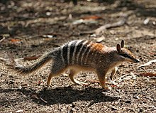

wallaby
The numbat (Myrmecobius fasciatus), also known as the noombat or walpurti,[4][5] is an insectivorous marsupial. It is diurnal and its diet consists almost exclusively of termites. The species was once widespread across southern Australia, but is now restricted to several small colonies in Western Australia. It is therefore considered an endangered species and protected by conservation programs. Numbats were recently re-introduced to fenced reserves in South Australia and New South Wales.[6][7][8][9] The numbat is the faunal emblem of Western Australia.[10].